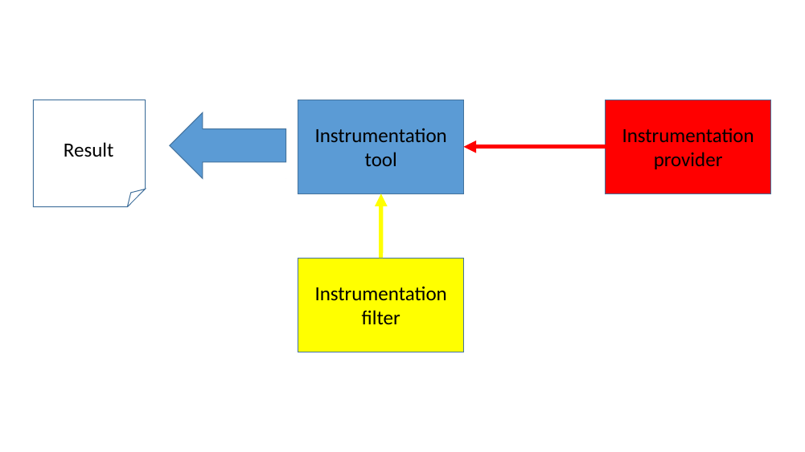
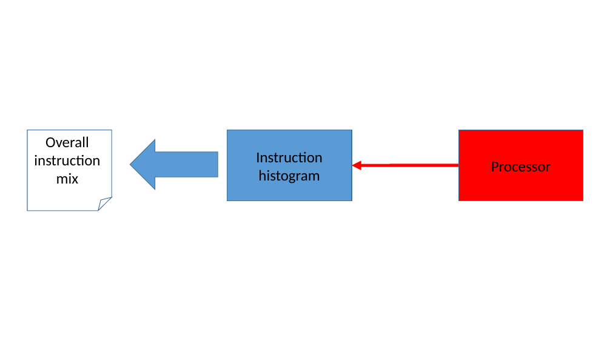
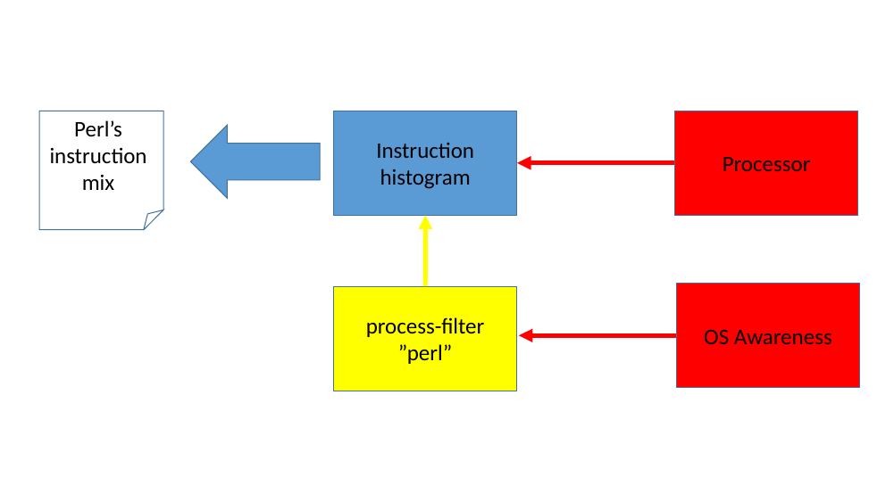
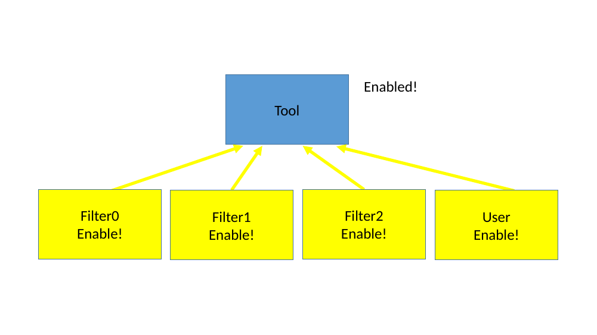
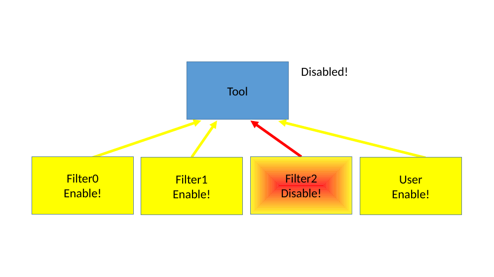
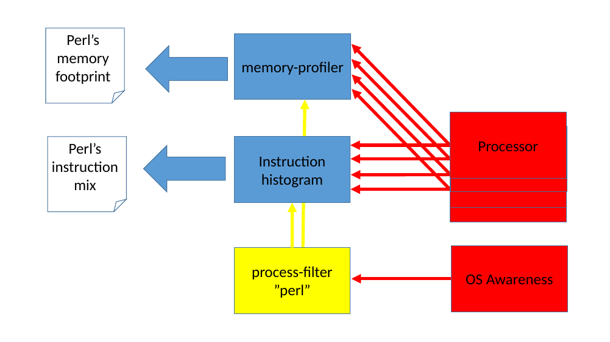

This section describes the Instrumentation Framework in Simics.
Simics' instrumentation framework provides a mechanism for inspecting various parts of the running simulated system and features a flexible way to dynamically add/remove inspections. The framework is designed with performance in mind, allowing fast and parallel execution with low latency communication.
Unlike most profiling tools, which instrument the target source code or object code, Simics can profile a workload non-intrusively. This allows you to profile without disturbing the execution. Simics will profile arbitrary code, including device drivers, dynamically generated code, and code for which you do not have the source. Also, unlike most profiling tools, Simics collects profiling data exactly, not by sampling the execution and relying on statistics.
What information that can be obtained through the instrumentation framework depends on how well the devices and other objects have been adapted to this new framework. Since the framework is new, only some models support instrumentation through various interfaces:
Conceptually, Simics instrumentation framework consists of four elements:
Figure 4 shows an abstract view of a possible setup. The instrumentation provider sends information through an instrumentation connection to the tool. The instrumentation filter can decide to disable the gathering of information from the provider. At any point within the simulation the tool can produce output for the user on what it has collected.

To concretize the abstract example in a more realistic setup, figure 5 shows an "instruction-histogram" tool which counts the instructions being executed and their frequency, producing a histogram of the most commonly used instructions that were executed on this processor (system-wide, that is, both instructions in the operating system, kernel threads, and all user-level processes are counted).

If only a specific application's instruction mix is of interest, we can add a filter to this setup. In figure 6, a process-filter has been setup to monitor the 'perl' application only. The process-filter uses the OS-Awareness feature in Simics to get information when any perl process is created, scheduled on a certain cpu, or die. With this knowledge, the process-filter enables and disables the instruction-histogram collection. The output from the instruction-histogram is now only the instruction mix for the perl application(s) that has executed.

Filters are orthogonal to the tools, and the tools are themselves unaware of any existing filters controlling them. From the tool perspective, it is simply someone requesting their connections to be disabled or enabled.
It is possible to have multiple filters controlling one tool as shown in figure 7. This allows sophisticated setups for zooming in a specific details of the instrumentation gathered.
In principle, all tools always have one filter: the user, which can use Simics commands to enable or disable the communication manually, in a script or in a script-branch. By using enable/disable commands in a script branch, the user have the possibility to control when the instrumentation should be active based on virtual-time, breakpoints triggered etc.
As long as all filters enables the tool's connection, it will be active.

But as shown in figure 8 when any filter decides to disable the connection it will become disabled and remain so until all filters have enabled it again.

How providers and tools are allowed to be connected depends on the tool's requirements of the providers interfaces. That is, some tools can only connect to certain providers.
It is possible to connect:
An even more advanced example is illustrated the in figure 9. In this setup, there are two tools working simultaneously, both are connected to the same SMP cluster of processors and both are using the same filter which tracks the 'perl' application.

This chapter describes an overview of the Simics commands that can be used in relation to instrumentation support.
When Simics has loaded a system configuration, providers normally already exist, as part of the device models. Which tools that are available depends on the Simics packages installed. To get an overview of the available instrumentation commands in Simics, use the command: help Instrumentation.
It is also possible to use the list-instrumentation-tools command to see the tools available.
Available tools must first be created with a new-<tool> command, for example new-instruction-histogram.
Once a tool has been created it will have a number of generic instrumentation commands associated with it, as well as tool specific commands. Tools typically supports the following generic commands:
<tool>..add-instrumentation — connect the tool to provider(s).<tool>..remove-instrumentation — disconnect the tool from provider(s).<tool>..disable-instrumentation — temporary disable information gathering.<tool>..enable-instrumentation — re-enable information gathering.<tool>..add-filter — adds a filter to the tool.<tool>..remove-filter — remove a filter from the tool.By connecting an Instrumentation tool object to an Instrumentation provider object, information can be extracted from the running system. Connecting can be done either directly when the tool is created with the new-<tool> command, or done afterwards with the <tool>.add-instrumentation command.
The established connections between providers and tools can be listed with the list-instrumentation command.
Figure 10 shows a simple example of commands for creating two different instruction histograms and their output after running some instructions.
simics> new-instruction-histogram -connect-all view = size
[board.mb.cpu0.core[0][0] info] VMP not engaged. Reason: instrumentation enabled.
Created ihist0 (connected to 1 processor)
simics> new-instruction-histogram -connect-all view = mnemonic
Created ihist1 (connected to 1 processor)
simics> list-instrumentation
1 ihist0 - connected to board.mb.cpu0.core[0][0]:0 view = "size"
2 ihist1 - connected to board.mb.cpu0.core[0][0]:1 view = "mnemonic"
simics> c 10000
simics> ihist0.histogram
┌─────┬───────┬─────┬───────┬───────────┐
│Row #│ Size │Count│ Count%│Accumulated│
│ │(bytes)│ │ │ Count% │
├─────┼───────┼─────┼───────┼───────────┤
│ 1│ 2│ 4480│ 44.80%│ 44.80%│
│ 2│ 1│ 1661│ 16.61%│ 61.41%│
│ 3│ 3│ 1596│ 15.96%│ 77.37%│
│ 4│ 5│ 1074│ 10.74%│ 88.11%│
│ 5│ 4│ 560│ 5.60%│ 93.71%│
│ 6│ 6│ 408│ 4.08%│ 97.79%│
│ 7│ 7│ 212│ 2.12%│ 99.91%│
│ 8│ 8│ 8│ 0.08%│ 99.99%│
│ 9│ 10│ 1│ 0.01%│ 100.00%│
├─────┼───────┼─────┼───────┼───────────┤
│Sum │ │10000│100.00%│ │
└─────┴───────┴─────┴───────┴───────────┘
Average size of executed instruction: 2.702500 (21 bits)
simics> ihist1.histogram max = 10
┌─────────┬────────┬─────┬───────┬───────────┐
│ Row # │mnemonic│Count│ Count%│Accumulated│
│ │ │ │ │ Count% │
├─────────┼────────┼─────┼───────┼───────────┤
│ 1│mov │ 3025│ 30.25%│ 30.25%│
│ 2│jmp │ 901│ 9.01%│ 39.26%│
│ 3│add │ 864│ 8.64%│ 47.90%│
│ 4│cmp │ 854│ 8.54%│ 56.44%│
│ 5│out │ 731│ 7.31%│ 63.75%│
│ 6│movsx │ 413│ 4.13%│ 67.88%│
│ 7│jne │ 386│ 3.86%│ 71.74%│
│ 8│inc │ 377│ 3.77%│ 75.51%│
│ 9│je │ 345│ 3.45%│ 78.96%│
│ 10│jae │ 267│ 2.67%│ 81.63%│
├─────────┼────────┼─────┼───────┼───────────┤
│# 10/42 │ │ │ │ │
│Sum (all)│ │10000│100.00%│ │
│Sum shown│ │ 8163│ 81.63%│ │
└─────────┴────────┴─────┴───────┴───────────┘
The framework also supports creating named groups, which can be used in the above commands to, for example, disable a number of connections with a single command. Such groups can be created with the create-instrumentation-group command. The group name can then be used when the connection is established with the new-<tool> and <tool>.add-instrumentation commands.
Each established connection between a provider and tool gets a connection specific sub-object associated with the tool. When multiple tools are connected to a provider, by default, the provider will give instrumentation information to each tool in the order they where connected. That is, each new connection automatically comes last.
Some providers, however, supports re-arranging the order of how the tools are called. This can be useful if one tool makes any kind of change to the simulation that the other tools should see the effect of. For providers which support re-arranging the dispatch order, the instrumentation-order command can be used to see the order and the instrumentation-move command can be used to move a tool connection to an earlier or later stage.
The instrumentation setup is session specific, thus it will not be saved in checkpoints. To re-establish the instrumentation capabilities after loading a checkpoint, objects must be re-created and communication setup again using the same commands that was used before the checkpoint was saved. This can for example be done in a script executed after the checkpoint has been loaded.
Below are some instrumentation tools listed, that are currently distributed (including source code), together with a short description of the tools purposes.
The following instrumentation filters are available, including source code:
Some instrumentation tools supports printing out the gathered data to a comma separated value (.csv) file. This makes it easy to import the raw data with an external spreadsheet program, for further analyses, calculations and visualizing the data as graphs.
Any Simics object that implements the table interface will automatically get the export-table-csv command and it exist on either the tool for the total, the individual connection objects, or both. See figure 11 for an example.
$> ./simics targets/qsp-x86/firststeps.simics num_cores=8
simics> new-instruction-histogram -connect-all
[board.mb.cpu0.core[0][0] info] VMP not engaged. Reason: instrumentation enabled.
Created ihist0 (connected to 8 processors)
simics> run 10 s
simics> ihist0.export-table-csv file = all-cpus-10seconds.csv
simics> ihist0.con0.export-table-csv file = first-cpu-10seconds.csv
simics> quit
$> head all-cpus-10seconds.csv
mnemonic,Count
mov,919169650
add,302311251
cmp,206492934
test,160303832
adc,150848000
jne,144637182
je,133354184
lea,120721026
push,97795399
$> head first-cpu-10seconds.csv
mnemonic,Count
mov,414052451
add,165503526
cmp,100845317
adc,88820557
test,71309728
jne,70008313
lea,56315642
movzx,54618965
je,52189244
This chapter describes a sample session when using some of the instrumentation tools. Refer to the command descriptions for details on each individual command.
As a basis for this example, the Coremark www.eembc.org/coremark/ benchmark will be run and analyzed in Simics. The source code is downloadable with an Apache license and very easy to compile and run. In this example Coremark will be run on a x86 QSP system running Linux.
The Coremark binary was compiled on standard x86 Linux host system and in this example we are using the simics-agent to transfer the binary to the target system. The script in figure 12 shows how the binary is uploaded to the target, enabling instrumentation only for the coremark executable and starting coremark and waiting for it to be finished.
simics> run-script "targets/qsp-x86/firststeps.simics"
simics> script-branch {
local $con = board.serconsole.con
local $bin = coremark.exe
local $params = " 0x0 0x0 0x66 10000 7 1 2000" # run1 parameters (10000 iterations)
local $prompt = "# "
# Wait for a linux prompt to appear and then upload our binary
# to the target system using simics-agent
bp.console_string.wait-then-write console = $con $prompt "simics-agent &\n"
$am = (start-agent-manager)
$m = ($am.connect-to-agent)
$m.change-directory "/root"
$j = ($m.upload -executable $bin)
$m.wait-for-job $j
# Create and connect instrumentation tools
$ihn = (new-instruction-histogram -connect-all view = x86-normalized)
$ihs = (new-instruction-histogram -connect-all view = size)
$bp = (new-x86-branch-profiler -connect-all)
$mp = (new-memory-profiler -connect-all -read-logical -write-logical -execute-logical)
# Only let the instrumentation tools monitor our process
$pattern ="name='" + $bin + "'"
$pf = (new-process-filter software-component = board.software pattern = $pattern)
$ihn.add-filter filter = $pf
$ihs.add-filter filter = $pf
$bp.add-filter filter = $pf
$mp.add-filter filter = $pf
# Start the process, wait for it to finish, and then stop simulation
$con.input "\n"
bp.console_string.wait-then-write console = $con $prompt ("./" + $bin + $params + "\n")
$con.bp-wait-for-console-string $prompt
stop
}
simics> run
In this setup four instrumentation tools are enabled:
The instrumentation data gathered by these tools will be analyzed a bit in the next chapters. To get a bit more readable big numbers, the following commands splits the numbers with underscores on logical units; digit-grouping 10 3 for decimal values and digit-grouping 16 4 for hexadecimal values.
First lets take a look of which instructions that are most commonly executed shown in figure 13.
simics> ihist0.histogram max = 10
┌─────────┬────────────────────────────────┬─────────────┬───────┬───────────┐
│ Row # │ x86 normalized │ Count │ Count%│Accumulated│
│ │ │ │ │ Count% │
├─────────┼────────────────────────────────┼─────────────┼───────┼───────────┤
│ 1│mov r32,r32 │ 330_467_974│ 9.60%│ 9.60%│
│ 2│jne imm │ 308_597_223│ 8.96%│ 18.56%│
│ 3│mov r64,r64 │ 204_178_395│ 5.93%│ 24.49%│
│ 4│je imm │ 190_302_166│ 5.53%│ 30.01%│
│ 5│add r32,r32 │ 142_190_315│ 4.13%│ 34.14%│
│ 6│test r64,r64 │ 140_221_077│ 4.07%│ 38.21%│
│ 7│mov r64,qword ptr [r64] │ 139_282_002│ 4.04%│ 42.26%│
│ 8│and r32,imm │ 130_455_258│ 3.79%│ 46.05%│
│ 9│cmp r8,imm │ 123_723_347│ 3.59%│ 49.64%│
│ 10│movsx r32,word ptr [r64+r64*imm]│ 123_120_000│ 3.58%│ 53.22%│
├─────────┼────────────────────────────────┼─────────────┼───────┼───────────┤
│# 10/425 │ │ │ │ │
│Sum (all)│ │3_443_579_955│100.00%│ │
│Sum shown│ │1_832_537_757│ 53.22%│ │
└─────────┴────────────────────────────────┴─────────────┴───────┴───────────┘
Here the 10 most commonly executed instruction combination is listed. A total of 425 different instruction variants was identified when running the coremark benchmark. With 10,000 iterations in coremark, roughly 3 billion instructions was executed in total. SSE registers are marked as x128 in the disassembly, lets see if any of these where executed in figure 14.
simics> ihist0.histogram sort-on-column = "x86 normalized" instruction-regexp = ".*x128"
Table reduced from 425 to 29 rows
┌─────┬──────────────────────────────────┬─────┐
│Row #│ x86 normalized │Count│
├─────┼──────────────────────────────────┼─────┤
│ 1│cvtsi2sd(64) x128,r64 │ 5│
│ 2│divsd x128,[rip+imm] │ 4│
│ 3│divsd x128,x128 │ 1│
│ 4│movapd x128,x128 │ 1│
│ 5│movaps xmmword ptr [r64+imm],x128 │ 16│
│ 6│movd r64,x128 │ 10│
│ 7│movd x128,r32 │ 42│
│ 8│movd x128,r64 │ 6│
│ 9│movdqa x128,x128 │ 71│
│ 10│movdqa x128,xmmword ptr [r64+imm] │ 1│
│ 11│movdqu x128,xmmword ptr [r64+imm] │ 45│
│ 12│movdqu x128,xmmword ptr [r64] │ 48│
│ 13│movsd [r64+imm],x128 │ 1│
│ 14│movsd [r64-imm],x128 │ 2│
│ 15│movsd x128,[r64+imm] │ 1│
│ 16│movsd x128,[r64] │ 2│
│ 17│movsd x128,[rip+imm] │ 1│
│ 18│pcmpeqb x128,x128 │ 178│
│ 19│pcmpeqb x128,xmmword ptr [r64+imm]│ 9│
│ 20│pcmpeqb x128,xmmword ptr [r64] │ 1│
│ 21│pminub x128,[r64+imm] │ 3│
│ 22│pmovmskb r32,x128 │ 103│
│ 23│por x128,x128 │ 85│
│ 24│pshufd x128,x128,imm │ 41│
│ 25│punpcklbw x128,x128 │ 41│
│ 26│punpcklwd x128,x128 │ 41│
│ 27│pxor x128,x128 │ 68│
│ 28│ucomisd x128,[rip+imm] │ 1│
│ 29│ucomisd x128,x128 │ 1│
├─────┼──────────────────────────────────┼─────┤
│Sum │ │ 829│
└─────┴──────────────────────────────────┴─────┘
So a few instructions, but they are not used in the body of the benchmark at all, since they are executed so few times. Now lets investigate the instruction sizes of the executed instructions, which is gathered by the other instruction-histogram shown in figure 15.
simics> ihist1.histogram
┌─────┬───────┬─────────────┬───────┬───────────┐
│Row #│ Size │ Count │ Count%│Accumulated│
│ │(bytes)│ │ │ Count% │
├─────┼───────┼─────────────┼───────┼───────────┤
│ 1│ 3│1_552_922_442│ 45.10%│ 45.10%│
│ 2│ 2│ 867_469_439│ 25.19%│ 70.29%│
│ 3│ 4│ 575_089_349│ 16.70%│ 86.99%│
│ 4│ 5│ 253_701_408│ 7.37%│ 94.35%│
│ 5│ 6│ 145_314_324│ 4.22%│ 98.57%│
│ 6│ 1│ 34_766_864│ 1.01%│ 99.58%│
│ 7│ 7│ 9_451_053│ 0.27%│ 99.86%│
│ 8│ 8│ 4_273_215│ 0.12%│ 99.98%│
│ 9│ 9│ 550_962│ 0.02%│ 100.00%│
│ 10│ 10│ 40_428│ 0.00%│ 100.00%│
│ 11│ 11│ 456│ 0.00%│ 100.00%│
│ 12│ 12│ 14│ 0.00%│ 100.00%│
├─────┼───────┼─────────────┼───────┼───────────┤
│Sum │ │3_443_579_954│100.00%│ │
└─────┴───────┴─────────────┴───────┴───────────┘
Average size of executed instruction: 3.187071 (25 bits)
Three byte instructions are by far the most common instruction size when executing this benchmark.
The branch-profiler will report more details on the branch instructions shown in figure 16.
simics> bprof0.histogram max = 15
┌─────────┬───────────┬───────────┬───────────┬───────────┬───────┬───────────┐
│ Row # │ Branch │ Taken │ Non-taken│ Total │ Total%│Accumulated│
│ │Instruction│ │ │ │ │ Total% │
├─────────┼───────────┼───────────┼───────────┼───────────┼───────┼───────────┤
│ 1│jne │273_402_780│ 35_194_443│308_597_223│ 47.44%│ 47.44%│
│ 2│je │ 10_877_292│179_424_874│190_302_166│ 29.25%│ 76.69%│
│ 3│jmp │ 34_532_902│ -│ 34_532_902│ 5.31%│ 82.00%│
│ 4│ja │ 6_862_422│ 15_880_527│ 22_742_949│ 3.50%│ 85.50%│
│ 5│call │ 20_884_324│ -│ 20_884_324│ 3.21%│ 88.71%│
│ 6│ret │ 20_884_320│ -│ 20_884_320│ 3.21%│ 91.92%│
│ 7│jbe │ 14_880_208│ 2_120_535│ 17_000_743│ 2.61%│ 94.53%│
│ 8│jg │ 6_640_020│ 6_320_100│ 12_960_120│ 1.99%│ 96.52%│
│ 9│jb │ 7_021_647│ 880_696│ 7_902_343│ 1.21%│ 97.74%│
│ 10│js │ 3_991_228│ 2_330_079│ 6_321_307│ 0.97%│ 98.71%│
│ 11│jle │ 2_665_772│ 2_280_227│ 4_945_999│ 0.76%│ 99.47%│
│ 12│jae │ 360_746│ 3_080_521│ 3_441_267│ 0.53%│ 100.00%│
│ 13│jns │ 29│ 10│ 39│ 0.00%│ 100.00%│
│ 14│jl │ 14│ 4│ 18│ 0.00%│ 100.00%│
│ 15│jcxz │ 0│ 0│ 0│ 0.00%│ 100.00%│
├─────────┼───────────┼───────────┼───────────┼───────────┼───────┼───────────┤
│# 15/22 │ │ │ │ │ │ │
│Sum (all)│ │403_003_704│247_512_016│650_515_720│100.00%│ │
│Sum shown│ │403_003_704│247_512_016│650_515_720│100.00%│ │
└─────────┴───────────┴───────────┴───────────┴───────────┴───────┴───────────┘
Here we see the most commonly used branch instruction with information if the branches were taken or not. Unconditional jumps, of course, always jumps. Finally, we can get instruction information from the memory-profiler shown in figure 17.
simics> mprof0.profile view = execute-logical max = 10
┌─────────┬────────────────┬────────────────┬─────────────┬───────┬───────────┐
│ Row # │ Start │ Stop │ Count │ Count%│Accumulated│
│ │ │ │ │ │ Count% │
├─────────┼────────────────┼────────────────┼─────────────┼───────┼───────────┤
│ 1│ 0x0040_1000│ 0x0040_1fff│2_454_100_308│ 71.27%│ 71.27%│
│ 2│ 0x0040_2000│ 0x0040_2fff│ 909_181_060│ 26.40%│ 97.67%│
│ 3│ 0x0040_0000│ 0x0040_0fff│ 80_070_862│ 2.33%│ 99.99%│
│ 4│0x7ff1_b614_4000│0x7ff1_b614_4fff│ 56_044│ 0.00%│ 100.00%│
│ 5│0x7ff1_b65d_c000│0x7ff1_b65d_cfff│ 48_656│ 0.00%│ 100.00%│
│ 6│0x7ff1_b65d_e000│0x7ff1_b65d_efff│ 29_808│ 0.00%│ 100.00%│
│ 7│0x7ff1_b65e_b000│0x7ff1_b65e_bfff│ 22_112│ 0.00%│ 100.00%│
│ 8│0x7ff1_b65d_b000│0x7ff1_b65d_bfff│ 15_855│ 0.00%│ 100.00%│
│ 9│0x7ff1_b65e_3000│0x7ff1_b65e_3fff│ 8_683│ 0.00%│ 100.00%│
│ 10│0x7ff1_b609_b000│0x7ff1_b609_bfff│ 7_780│ 0.00%│ 100.00%│
├─────────┼────────────────┼────────────────┼─────────────┼───────┼───────────┤
│# 10/90 │ │ │ │ │ │
│Sum (all)│ │ │3_443_579_954│100.00%│ │
│Sum shown│ │ │3_443_541_168│100.00%│ │
└─────────┴────────────────┴────────────────┴─────────────┴───────┴───────────┘
Here we can see where we have executed most, using the logical addresses. By default, the range between start and stop is set to 4K, but this can be controlled through a command argument. So the coremark binary executed on a total of 90 4K pages, but 99.9% of its execution was only in three pages. The memory-profiler will count the first byte of an instruction as executed. So if we decrease the granularity to just one byte shown in figure 18.
simics> mprof0.profile view = execute-logical granularity = 1 max = 10
┌──────────┬───────────┬───────────┬─────────────┬───────┬───────────┐
│ Row # │ Start │ Stop │ Count │ Count%│Accumulated│
│ │ │ │ │ │ Count% │
├──────────┼───────────┼───────────┼─────────────┼───────┼───────────┤
│ 1│0x0040_1333│0x0040_1333│ 61_200_000│ 1.78%│ 1.78%│
│ 2│0x0040_1336│0x0040_1336│ 61_200_000│ 1.78%│ 3.55%│
│ 3│0x0040_1339│0x0040_1339│ 61_200_000│ 1.78%│ 5.33%│
│ 4│0x0040_133c│0x0040_133c│ 61_200_000│ 1.78%│ 7.11%│
│ 5│0x0040_133f│0x0040_133f│ 61_200_000│ 1.78%│ 8.89%│
│ 6│0x0040_1330│0x0040_1330│ 59_160_000│ 1.72%│ 10.60%│
│ 7│0x0040_112a│0x0040_112a│ 29_160_000│ 0.85%│ 11.45%│
│ 8│0x0040_112d│0x0040_112d│ 29_160_000│ 0.85%│ 12.30%│
│ 9│0x0040_1950│0x0040_1950│ 29_160_000│ 0.85%│ 13.14%│
│ 10│0x0040_1953│0x0040_1953│ 29_160_000│ 0.85%│ 13.99%│
├──────────┼───────────┼───────────┼─────────────┼───────┼───────────┤
│# 10/12542│ │ │ │ │ │
│Sum (all) │ │ │3_443_579_954│100.00%│ │
│Sum shown │ │ │ 481_800_000│ 13.99%│ │
└──────────┴───────────┴───────────┴─────────────┴───────┴───────────┘
This produces the top-list of the most executed instruction of the benchmark. A total of 12542 unique instructions (in memory) have been executed.
For the same coremark run, now examine a bit on how many data accesses that happened, using the memory-profile tool again shown in figure 19.
simics> mprof0.profile view = read-logical max = 10
┌─────────┬────────────────┬────────────────┬─────────────┬───────┬───────────┐
│ Row # │ Start │ Stop │ Count │ Count%│Accumulated│
│ │ │ │ │ │ Count% │
├─────────┼────────────────┼────────────────┼─────────────┼───────┼───────────┤
│ 1│ 0x0060_5000│ 0x0060_5fff│2_064_749_345│ 76.15%│ 76.15%│
│ 2│0x7fff_15e5_e000│0x7fff_15e5_efff│ 646_513_938│ 23.84%│ 99.99%│
│ 3│ 0x0000│ 0x0fff│ 79_652│ 0.00%│ 99.99%│
│ 4│0x7ff1_b67f_3000│0x7ff1_b67f_3fff│ 48_740│ 0.00%│ 99.99%│
│ 5│0x7fff_15e5_d000│0x7fff_15e5_dfff│ 24_501│ 0.00%│ 99.99%│
│ 6│0x7ff1_b67f_6000│0x7ff1_b67f_6fff│ 12_934│ 0.00%│ 99.99%│
│ 7│0x7ff1_b67f_0000│0x7ff1_b67f_0fff│ 12_375│ 0.00%│ 100.00%│
│ 8│0x7ff1_b63c_6000│0x7ff1_b63c_6fff│ 10_768│ 0.00%│ 100.00%│
│ 9│0x7ff1_b67f_5000│0x7ff1_b67f_5fff│ 5_678│ 0.00%│ 100.00%│
│ 10│0x7ff1_b63c_4000│0x7ff1_b63c_4fff│ 4_988│ 0.00%│ 100.00%│
├─────────┼────────────────┼────────────────┼─────────────┼───────┼───────────┤
│# 10/88 │ │ │ │ │ │
│Sum (all)│ │ │2_711_569_260│100.00%│ │
│Sum shown│ │ │2_711_462_919│100.00%│ │
└─────────┴────────────────┴────────────────┴─────────────┴───────┴───────────┘
Here we can see that the reads to memory is pretty much only associated to one heap-page, and one stack-page. The memory-profiler here annotates each byte as being read. So if the software performs a 32 bit read, the four bytes will all have an increased counter. The similar for command for write-accesses is shown in figure 20.
simics> mprof0.profile view = write-logical max = 10
┌─────────┬─────────────────────┬─────────────────────┬─────────────┬───────┬───────────┐
│ Row # │ Start │ Stop │ Count │ Count%│Accumulated│
│ │ │ │ │ │ Count% │
├─────────┼─────────────────────┼─────────────────────┼─────────────┼───────┼───────────┤
│ 1│ 0x0060_5000│ 0x0060_5fff│ 595_005_622│ 53.23%│ 53.23%│
│ 2│ 0x7fff_15e5_e000│ 0x7fff_15e5_efff│ 522_602_567│ 46.75%│ 99.99%│
│ 3│0xffff_8801_f35a_f000│0xffff_8801_f35a_ffff│ 81_720│ 0.01%│ 99.99%│
│ 4│ 0x7fff_15e5_d000│ 0x7fff_15e5_dfff│ 22_052│ 0.00%│ 100.00%│
│ 5│ 0x7ff1_b63c_6000│ 0x7ff1_b63c_6fff│ 5_924│ 0.00%│ 100.00%│
│ 6│ 0x7ff1_b602_3000│ 0x7ff1_b602_3fff│ 4_093│ 0.00%│ 100.00%│
│ 7│ 0x7ff1_b67f_3000│ 0x7ff1_b67f_3fff│ 3_690│ 0.00%│ 100.00%│
│ 8│ 0x7ff1_b65d_2000│ 0x7ff1_b65d_2fff│ 2_893│ 0.00%│ 100.00%│
│ 9│ 0x7ff1_b63c_4000│ 0x7ff1_b63c_4fff│ 2_712│ 0.00%│ 100.00%│
│ 10│ 0x7ff1_b67e_e000│ 0x7ff1_b67e_efff│ 2_512│ 0.00%│ 100.00%│
├─────────┼─────────────────────┼─────────────────────┼─────────────┼───────┼───────────┤
│# 10/31 │ │ │ │ │ │
│Sum (all)│ │ │1_117_752_782│100.00%│ │
│Sum shown│ │ │1_117_733_785│100.00%│ │
└─────────┴─────────────────────┴─────────────────────┴─────────────┴───────┴───────────┘
Not very surprisingly, the writes goes to the same two pages, but writes are less frequent than reads. And finally say that we are interested in the distribution of the writes on the most commonly read stack-page, this is shown in figure 21.
simics> mprof0.profile view = read-logical start = 0x7fff_15e5_e000 stop = 0x7fff_15e5_efff granularity = 128 sort-on-column = Start
┌─────┬────────────────┬────────────────┬───────────┐
│Row #│ Start │ Stop │ Count │
├─────┼────────────────┼────────────────┼───────────┤
│ 1│0x7fff_15e5_e000│0x7fff_15e5_e07f│ 700│
│ 2│0x7fff_15e5_e080│0x7fff_15e5_e0ff│ 9_029│
│ 3│0x7fff_15e5_e100│0x7fff_15e5_e17f│ 14_585│
│ 4│0x7fff_15e5_e180│0x7fff_15e5_e1ff│ 17_138│
│ 5│0x7fff_15e5_e200│0x7fff_15e5_e27f│ 10_315│
│ 6│0x7fff_15e5_e280│0x7fff_15e5_e2ff│414_573_166│
│ 7│0x7fff_15e5_e300│0x7fff_15e5_e37f│171_369_107│
│ 8│0x7fff_15e5_e380│0x7fff_15e5_e3ff│ 56_832_627│
│ 9│0x7fff_15e5_e400│0x7fff_15e5_e47f│ 1_004_298│
│ 10│0x7fff_15e5_e480│0x7fff_15e5_e4ff│ 2_681_185│
│ 11│0x7fff_15e5_e500│0x7fff_15e5_e57f│ 746│
│ 12│0x7fff_15e5_e580│0x7fff_15e5_e5ff│ 408│
│ 13│0x7fff_15e5_e600│0x7fff_15e5_e67f│ 240│
│ 14│0x7fff_15e5_e680│0x7fff_15e5_e6ff│ 220│
│ 15│0x7fff_15e5_e700│0x7fff_15e5_e77f│ 76│
│ 16│0x7fff_15e5_e780│0x7fff_15e5_e7ff│ 98│
├─────┼────────────────┼────────────────┼───────────┤
│Sum │ │ │646_513_938│
└─────┴────────────────┴────────────────┴───────────┘
In this case we listed the addresses in address-order using the granularity of 128 bytes.
The bank-coverage-tool provides register coverage for DML devices.
Device register coverage can be thought of as code coverage for modeled registers. The tool can aggregate register accesses over several Simics runs by saving intermediate results to a file and summarize the total coverage figures for each device through the command line interface. The tool can also export results to CSV.
The tool makes use of the bank instrumentation framework to collect register accesses and uses the general instrumentation framework and its familiar interfaces, documented in this section, to connect to register banks. Please see the API Reference Manual for more details about the bank instrumentation framework, which the tool also relies on, and how to develop your own tools using this framework.
By connecting the tool to banks of interest, or using the -connect-all flag when instantiating the tool, the tool will track all accesses to connected banks and summarize the number of accessed registers in a device as a percentage to the number of its registers in total. We call this the 'coverage' of a device. For further inquiry, the tool may also present the accrued number of accesses to individual registers in a connected bank. However the register accesses are presented, they may be filtered on read accesses, write accesses, or both. Both commands may be interacted with in this way and the output may be sorted and mutated in a variety of ways.
In order to instantiate the tool, use the new-bank-coverage-tool command and provide any banks you want to connect to the tool. Alternatively, you can use the -connect-all flag to connect it to any supporting banks in the system. Additional banks can be connected using the add-instrumentation command on the tool.
When the configuration is loaded, instantiate and connect the bank coverage tool to all banks in the system like so:
simics> new-bank-coverage-tool -connect-all
Created coverage_tool0 (connected to 75 banks)
Once the tool is instantiated we may run the workload, which in this case is booting Linux. At any time we may stop the simulation and use the coverage command to present the coverage so far, which is ordered by the coverage percentage by default:
simics> coverage_tool0.coverage -write max = 10
┌─────────┬─────────────────────────┬──────────────────────┬─────────────┬─────────┐
│ Row # │ Device │No. accessed registers│No. registers│Coverage%│
├─────────┼─────────────────────────┼──────────────────────┼─────────────┼─────────┤
│ 1│board.mb.sb.spi_flash_obj│ 0│ 0│ 100.00%│
│ 2│board.mb.sb.com[0] │ 5│ 8│ 62.50%│
│ 3│board.mb.sb.com[2] │ 5│ 8│ 62.50%│
│ 4│board.mb.sb.com[1] │ 5│ 8│ 62.50%│
│ 5│board.mb.sb.com[3] │ 5│ 8│ 62.50%│
│ 6│board.mb.sb.hpet │ 15│ 28│ 53.57%│
│ 7│board.mb.sb.bridge │ 17│ 38│ 44.74%│
│ 8│board.mb.sb.uhci[4] │ 19│ 50│ 38.00%│
│ 9│board.mb.sb.uhci[2] │ 19│ 50│ 38.00%│
│ 10│board.mb.sb.uhci[0] │ 19│ 50│ 38.00%│
├─────────┼─────────────────────────┼──────────────────────┼─────────────┼─────────┤
│# 10/44 │ │ │ │ │
│Sum (all)│ │ 830│ 3391│ │
│Sum shown│ │ 109│ 248│ │
└─────────┴─────────────────────────┴──────────────────────┴─────────────┴─────────┘
Note that we're limiting the output by using the max parameter. The output of the bank coverage tool commands may be morphed like this in many ways. It's left as an exercise to the user to explore these possibilities further.
A user may also export the attained coverage to CSV by using the to-file parameter:
simics> coverage_tool0.coverage -write max = 10 to-file = ~/coverage.csv
This will output a CSV file like so:
Device,No. accessed registers,No. registers,Coverage%
board.mb.sb.spi_flash_obj,0,0,1.0
board.mb.sb.com[0],5,8,0.625
board.mb.sb.com[2],5,8,0.625
board.mb.sb.com[1],5,8,0.625
board.mb.sb.com[3],5,8,0.625
board.mb.sb.hpet,15,28,0.5357142857142857
board.mb.sb.bridge,17,38,0.4473684210526316
board.mb.sb.uhci[4],19,50,0.38
board.mb.sb.uhci[2],19,50,0.38
board.mb.sb.uhci[0],19,50,0.38
...
Furthermore, we may inspect the register accesses, of any connected bank, of every device presented in the coverage output by using the access-count command:
simics> coverage_tool0.access-count board.mb.sb.hpet.bank.regs -write sort-on-column = "Count" max = 10
┌─────────┬───────────────┬──────┬────┬──────┐
│ Row # │ Name │Offset│Size│Count │
├─────────┼───────────────┼──────┼────┼──────┤
│ 1│tim_comp[2] │ 0x148│ 8│529647│
│ 2│tim_comp[3] │ 0x168│ 8│ 19140│
│ 3│gen_conf │ 0x10│ 8│ 6│
│ 4│fsb_int_rout[2]│ 0x150│ 8│ 6│
│ 5│tim_conf[1] │ 0x120│ 8│ 5│
│ 6│tim_conf[0] │ 0x100│ 8│ 5│
│ 7│tim_conf[2] │ 0x140│ 8│ 5│
│ 8│tim_comp[0] │ 0x108│ 8│ 2│
│ 9│tim_comp[1] │ 0x128│ 8│ 2│
│ 10│main_cnt │ 0xf0│ 8│ 2│
├─────────┼───────────────┼──────┼────┼──────┤
│# 10/15 │ │ │ │ │
│Sum (all)│ │ │ │548825│
│Sum shown│ │ │ │548820│
└─────────┴───────────────┴──────┴────┴──────┘
Note that we're sorting the table based on the number of accesses rather than offset, which is the default.
If the tool were to be used to compile the total coverage figures over a set of runs, such as over several tests, a user may utilize the save command to temporarily save the results to disk:
simics> coverage_tool0.save ~/coverage_0.bin
...and subsequently use the load command to aggregate the results:
simics> coverage_tool0.load ~/coverage_0.bin
simics> coverage_tool0.load ~/coverage_1.bin
simics> coverage_tool0.load ~/coverage_2.bin
...
Once loaded, the coverage and access-count commands will act as if all the accesses had happened during the same run and present the combined results accordingly. In this way, a user may compile the aggregated results of an entire test suite, which should prove useful.